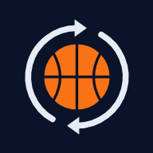
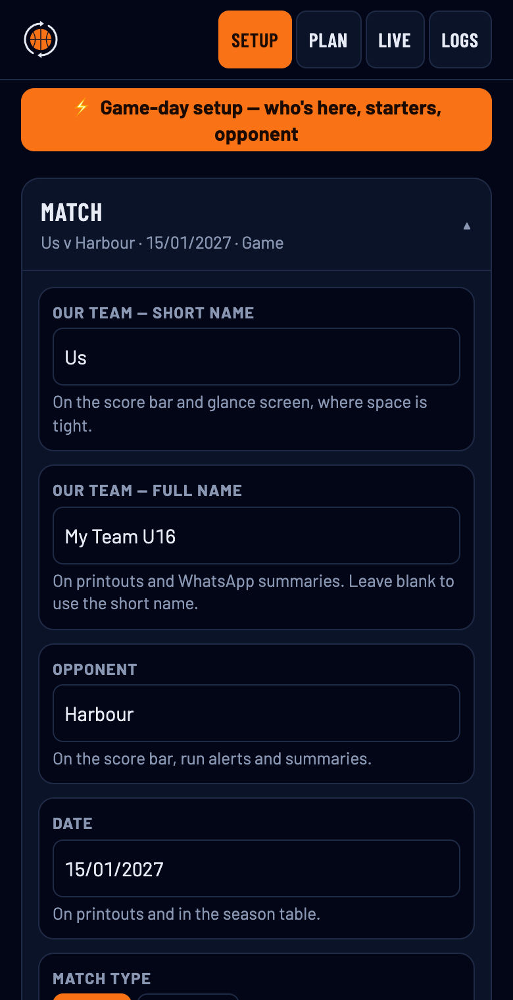
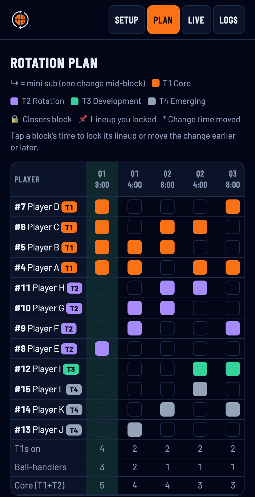
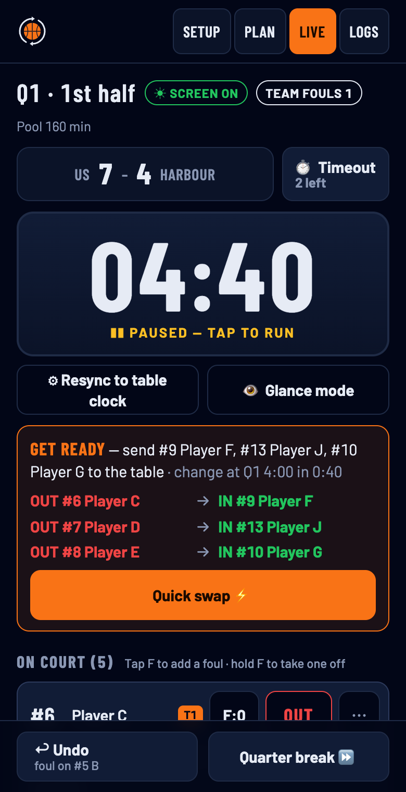
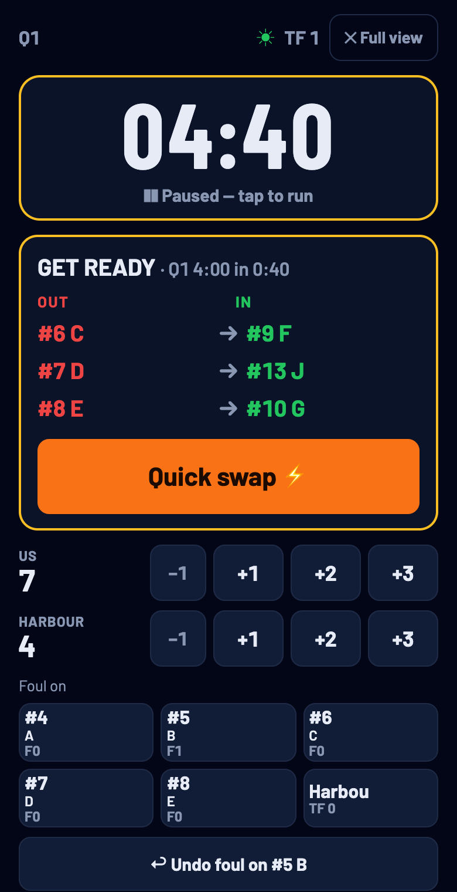
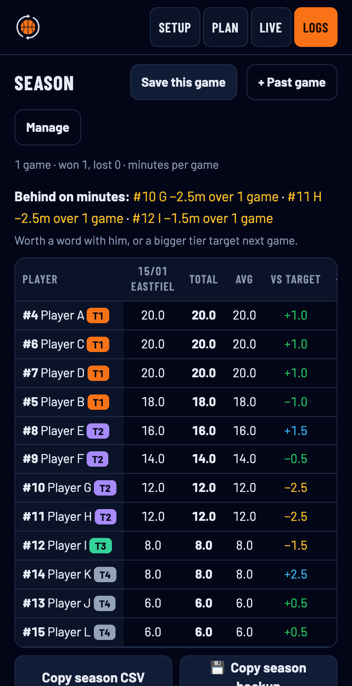
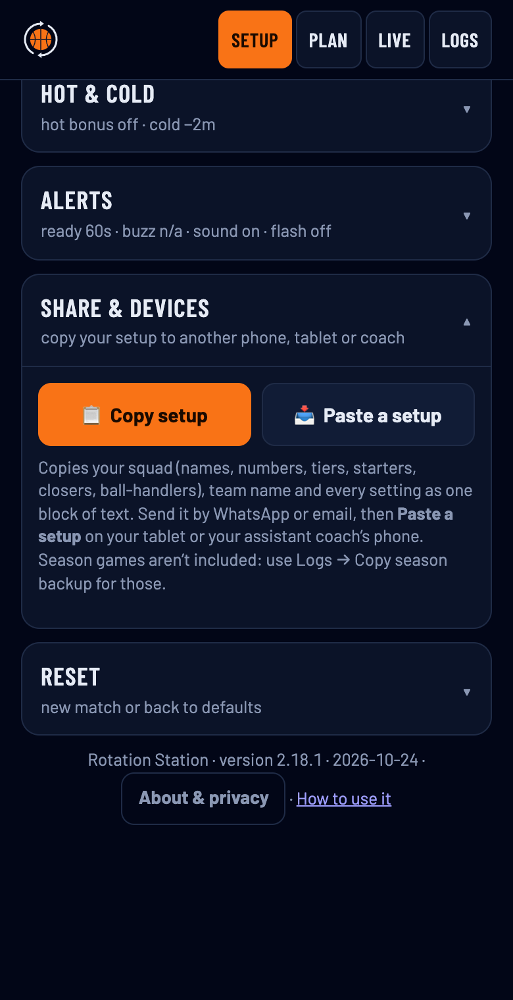

A free phone app for youth basketball coaches. It plans who plays when, so every player gets fair minutes, tells you when to sub, and keeps the score and fouls during the game.
This guide is for version 2.18.1 · 2026-10-24.
It runs in your phone’s browser, so there’s nothing to download from an app store. Add it to your home screen and it opens like any other app.

Everything starts on the Setup tab. Each section opens when you tap its heading, and every setting has a short note under it.
Type your team’s short name (for the score bar) and full name (for printouts and WhatsApp summaries).
Replace Player A, Player B and the rest with your players’ names and numbers. Use + Add player or ✕ to change the size of the squad.
Then put each player in a tier. The tier sets how many minutes they get:
| Tier | Who | Default minutes |
|---|---|---|
| T1 | Core / closers | 20 |
| T2 | Main rotation | 15 |
| T3 | Development | 10 |
| T4 | Emerging | 6 |
Change the minutes under Game & minutes. If the tiers ask for more (or fewer) minutes than a game has, the app scales the targets a little so it adds up. The note under the tier minutes tells you when that’s happening.
Three more buttons on each player:
The defaults are 4 × 8-minute quarters with changes every 4 minutes, following Basketball NI / FIBA youth rules. Check your own league’s rules and change them under Game & minutes if they differ.
The other sections (Who’s on court, Subs & closers, Hot & cold, Alerts) are fine as they are to start with. Each one explains itself when you open it.

The Plan tab shows who plays in each block. Each coloured square is a player on court for that block. The rows at the bottom count T1s, ball-handlers and core players on court.
Tap a block’s time to lock its lineup or move the change a little earlier or later.
Copy rotation card gives you the plan as plain text for an assistant or the bench. 🖨 Rotation sheet makes a printable version.
The plan is advice. It works itself out again after every sub, foul-out or change of who’s here, so don’t worry if the game doesn’t go to plan.

Go to Live and tap the clock to tip off. Tap it again to pause when the referee stops play. If it drifts from the table clock, tap ⚙ Resync to table clock and use the −1:00 / −0:10 / +0:10 / +1:00 buttons to match the scoreboard, then Set.
Before each change the app shows Get ready with who to send to the table. Then Sub now at the change time. When they’re on, tap Quick swap ⚡.
You’re always in charge. Tap OUT on anyone on court or IN on anyone on the bench, and the plan adjusts.
Tap ⋯ on a player:
If someone gets injured, mark them Out in Game-day setup. They keep the minutes they’ve already played, and their remaining minutes are shared out.

Tap 👁 Glance mode for one big screen with just the clock, the next change, score buttons and fouls. It’s made for reading at arm’s length on the bench. Tap ✕ Full view to go back.
In the last 4 minutes of the game, your five closers (C) are on and routine subs stop. The app still tells you if you need to cover a foul-out or injury. You can change this under Subs & closers.
When a quarter ends, tap Quarter break ⏩ to move to the next one. Changes due at the start of a quarter are made during the break.

At full time, go to Logs:
Then tap New match. It clears the clock, minutes and fouls but keeps your squad and settings.

This copies your squad, team name and every setting. It replaces the squad on the other device, so it can’t be done during a game. Season games aren’t included. To move those, use Copy season backup and Restore on the Logs tab.
The app tells you when to get ready, when to sub now, when a change is overdue, when a player is on 4 fouls, and at the end of a quarter. Set how under Setup → Alerts.
| Alert | Works on |
|---|---|
| Vibration | Android phones only. iPhones don’t let web apps vibrate. |
| Sound | Auto beeps on devices that can’t vibrate: iPhone, iPad and tablets. Tap ▶ Test and turn the volume up. |
| Screen flash | Every phone. Amber for get ready, green for sub now, red for overdue. |
The app also keeps your screen on during a game. You’ll see ☀ Screen on at the top of the Live tab.
If the Live tab says Screen may sleep, tap anywhere in the app and it tries again. If it still dims, change your phone’s setting for the game: iPhone Settings → Display & Brightness → Auto-Lock → Never. Android Settings → Display → Screen timeout → 10 or 30 minutes. Low Power Mode or Battery Saver can also stop it, so turn that off for the game.
Check Setup → Alerts → Sound is on Auto or On, turn the volume up and tap ▶ Test. On iPhone the app asks to play even with the silent switch on, but a quick tap on the screen at the start of the game helps it get going.
Open the app while you have signal. It downloads the new version in the background and uses it the next time you open it. The version number is at the bottom of the Setup tab.
On the old phone, copy your setup (Setup → Share & devices) and your season backup (Logs). Install the app on the new phone, then paste the setup and restore the backup.
Missing for one game: mark them Out in Game-day setup. Left the team: tap ✕ next to their name in Setup. Their minutes from past games stay in the season table.
That’s fine. The app allows a short wait for a dead ball before it calls a change overdue (Setup → Alerts → Counts as on time within). Make the change at the next stoppage and tap Quick swap; the rest of the plan adjusts to the clock.
The defaults follow Basketball NI / FIBA youth play (4 × 8-minute quarters, 4-minute overtime). You can change the quarter length, overtime and minutes for each tier in Setup. Always check your own league’s rules.
Your data stays on your phone. There’s no account, no sign-up and no tracking. Names, minutes and scores are kept only in the browser on your device. Nothing is sent anywhere unless you copy it out yourself, as a backup, a summary or a setup.
Clearing your browser data or deleting the app deletes it too, which is why the season backup matters.